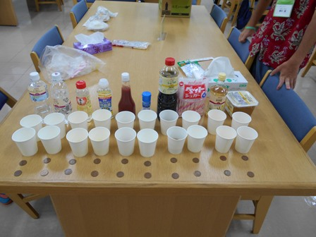
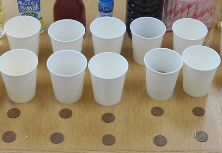
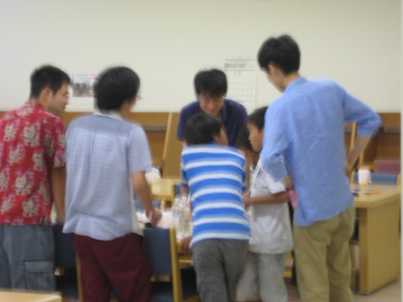
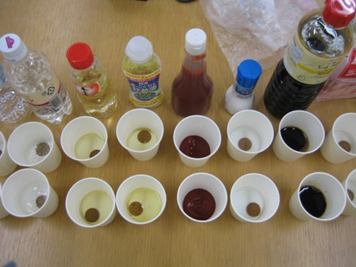
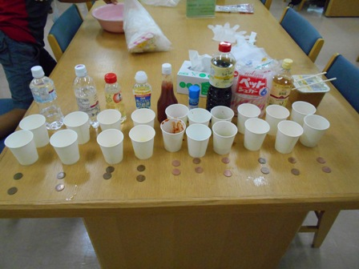
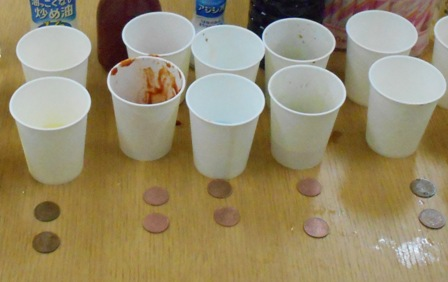

サマー・スタディ2015平成27年8月25日(火)、26日(水)に、岡山理科大学21号館3F図書館で、小学生を対象に、サマー・スタディが開催されました。 サマー・スラディは、近隣の小学生の勉強を理大生がサポートすることにより、地域貢献をするとともに理大生に様々な経験をしてもらうことを目的として、今年初めて開催したイベントです。 ※申込者は22名ありましたが、8/25は台風が近づいたため7名の欠席がありました。 夏休みの宿題を中心に、小学生を理大生がサポートしながら（直接答えは教えず、考え方などを教えてサポートします）、ドリル・作文・自由研究などが、行われました。 自由研究を行っています。 昼休みは、皆でお弁当を食べました 自由研究の実験も行いました。 実験前  実験中  実験後  何かが変わっていますね。それは何故かを、小学生は考えてまとめます。 小学生も先生役の理大生も楽しそうに勉強していました。 2日とも参加した小学生は、先生役の大学生とも顔なじみになり、2日目は早速昨日の先生の所に行って勉強を始めていました。 作文のサポートには先生も苦労していたようですが、何とか書きあがったようです。 ●保護者の方の感想 ●理大生の感想 今回サマースタディという企画で，小学生と夏休みの勉強をしました．子ども自身がやりたい宿題や工作のテーマを持ってきて，大学生の先生が一緒に考えたり教えたりしました．計算ドリルなどの宿題は，大学生にとっては当たり前である計算を，答えを教えずに考え方を教える難しさがありました．自由研究などは，小学生向けの実験が多く載っている本を図書館で用意してくれていたため，その中から子どもの興味にあったものを探して実際にやってみて，まとめ方のアドバイスもしました． また，理科大学ということで自由研究の結果から得られた疑問を先生にぶつけてくれる子どもがいました．小学生にわかるようにかみ砕いて話そうとしたのはよかったのですが，つい先生が調べて答えを教えてしまう形になってしまいました．疑問の答えに近づけるヒントを与えるような接し方にすれば子どもの力をさらに伸ばせるだろうと思います．この小学生の疑問をもとに，大学生も新しい知識を得られて有意義でした． 子どもも先生もどちらも成長できる機会なので，今後参加者がさらに増えていけばいいと思います． |